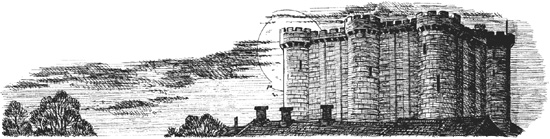

Listen to Part 1:

Năm 1661. Một đêm hè ấm áp. Aramis, Giám mục giáo phận Vannes, đến nhà tù khủng khiếp Bastille ở Paris. Một lính canh ra đón ông trước cổng.
Aramis nói: "Dẫn tôi đến gặp ngài Baisemeaux."
Vài phút sau, vị Giám mục đang trò chuyện với viên thị trưởng của nhà tù. Ông đưa ngài Baisemeaux một tờ giấy và chỉ vào một cái tên trên đó.
Aramis nói: "Tôi muốn gặp tù nhân này."
Viên thị trưởng đọc tên trên tờ giấy.
Ông nói: "Xin mời ngài Giám mục theo tôi."
Vài phút sau, hai người đã tới cửa một phòng giam. Viên thị trưởng mở cửa phòng giam bằng một chiếc chìa khóa.
Vị Giám mục nói: "Tôi phải nói chuyện riêng với tù nhân."
Aramis đi vào phòng giam. Viên thị trưởng đóng cửa phòng giam rồi bỏ đi.
Listen to Part 2:
Aramis nhìn quanh căn phòng nhỏ. Ông thấy một chàng trai trẻ đang ngồi trên giường. Ông thấy một ô cửa sổ nhỏ, ở trên cao trên tường. Ông thấy một chiếc ghế và một đĩa thức ăn trên một chiếc bàn nhỏ. Người tù nhân không ăn miếng thức ăn nào trên đĩa.
Aramis lại nhìn chàng trai trẻ.
Người tù nhân hỏi: "Ngài muốn gì?" Rồi anh ta nhìn kỹ vị khách của mình. Ông già cao lớn là một giám mục của Nhà thờ Công giáo. Ông đang mặc một chiếc áo choàng màu tím dài.
Chàng trai trẻ nói: "Tôi từng thấy ngài rồi, Giám mục."
Aramis mỉm cười. Ông nói: "Tôi sẽ kể cho anh một bí mật."
Chàng trai trẻ nói: "Xin hãy ngồi xuống. Tôi lắng nghe đây."
Aramis ngồi xuống chiếc ghế. Một lát sau, ông bắt đầu nói. Ông hỏi: "Anh thích nhà tù Bastille không? Hay anh muốn tự do?"
Người tù nhân đáp: "Tự do là gì, hả Giám mục?"
Aramis nói: "Một người tự do được nhìn thấy những bông hoa đang nở. Được thấy mặt trời tỏa sáng. Được thấy ánh sáng của những vì sao. Đó là tự do!"
Chàng trai trẻ suy nghĩ một lúc. Anh ta chỉ vào một lọ hoa gần cửa sổ.
Listen to Part 3:
Anh ta nói: "Đây là hai bông hồng từ khu vườn của viên thị trưởng. Có phải chúng rất đẹp không?"
Người tù nhân nói: "Tôi cũng có ánh sáng. Mặt trời thăm tôi mỗi ngày. Nó chiếu qua ô cửa sổ nhỏ này. Vào ban đêm, tôi ngắm nhìn những vì sao. Tôi có tự do không, hả Giám mục?"
Aramis hỏi: "Tại sao anh lại ở đây? Tội của anh là gì?"
Chàng trai trẻ nói: "Tôi không phạm tội nào cả. Nhưng ngài sắp kể cho tôi một bí mật. Đó là gì?"
Aramis không trả lời câu hỏi của chàng trai trẻ.
Vị Giám mục nói: "Anh nói rằng "Tôi từng thấy ngài rồi". Anh nói đúng. Anh đã từng gặp tôi một lần. Vào năm 1646, khoảng mười lăm năm trước. Lúc đó anh đang ở nhà mình dưới quê. Tôi đi cùng một người phụ nữ mặc váy đen."
Người tù nhân nói: "Tôi nhớ bà ấy! Sau đó, bà ấy lại đến cùng một người phụ nữ khác nữa."
Aramis nói: "Đúng vậy. Và người phụ nữ thứ hai đó đã đến thăm anh hàng tháng."
Chàng trai trẻ nói: "Tôi nhớ rõ những lần bà ấy đến thăm. Sau năm thứ tám của tôi, tôi không có khách nào khác nữa. Tôi sống trong một ngôi nhà có vườn. Có những bức tường cao quanh khu vườn. Tôi không bao giờ ra ngoài những bức tường đó. Có hai người chăm sóc tôi, một y tá và một giáo viên. Giáo viên của tôi là một người rất tốt. Ông kể cho tôi về cha mẹ của mình. Ông nói rằng: "Bố mẹ của con đã mất rồi". Điều đó có đúng không, Giám mục? Cha tôi đã mất thật rồi chứ?"
Aramis nói: "Đúng vậy."
Listen to Part 4:
Chàng trai trẻ hỏi: "Còn mẹ tôi?"
Aramis trả lời: "Bà ấy đã mất đối với anh."
Chàng trai trẻ hỏi: "Nhưng còn với những người khác thì bà ấy vẫn sống chứ?"
Aramis chờ một lát. Ông nói: "Đúng vậy."